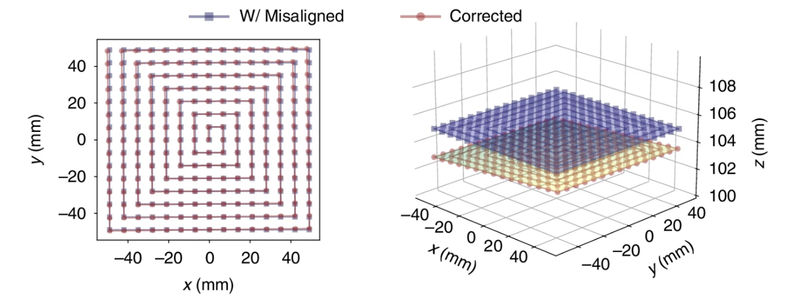
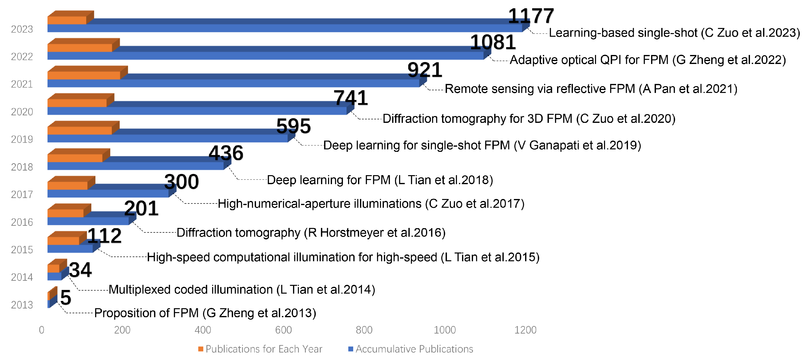
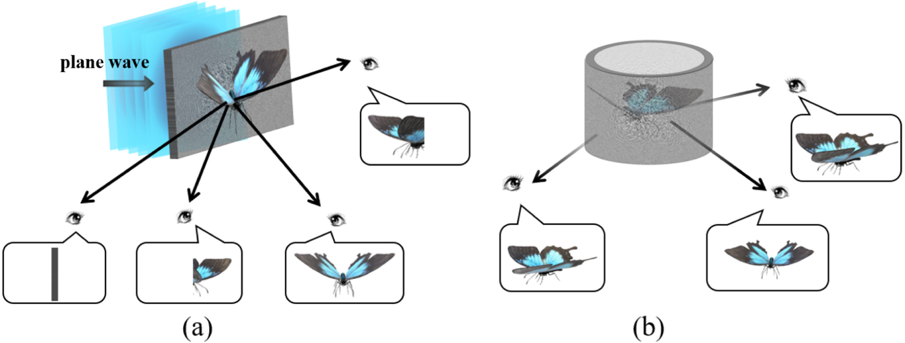

I am a Master's student in Prof. Mooseok Jang's group at KAIST, expecting to graduate in June 2026. I received my Bachelor of Engineering degree from Sichuan University in 2024.
My research focuses on developing advanced algorithms and optical systems—including Fourier ptychography and diffraction tomography—to solve challenging 3D imaging problems. I am seeking a Ph.D. position to pioneer next-generation computational imaging techniques for high-fidelity industrial metrology and non-destructive material characterization.
News
Sept 2024
Started my Master's degree in Bio and Brain Engineering at KAIST, joining the Mooo Research Group.
June 2024
Graduated from Sichuan University with a Bachelor of Engineering and received the First Prize for Outstanding Undergraduate Thesis.
Jan 2024
Our paper, "Fast scaled cylindrical holography based on scaled convolution," was published in Displays.
Selected Publications
(†indicates equal contributionship; underline and bold indicates my name.)

Uncertainty-aware Fourier ptychography
N. Chen†✉, Y. Wu†, Chao Tan, L. Cao, J. Wang✉, and E. Y. Lam✉
TL;DR: To overcome common experimental errors in Fourier Ptychography, we introduce a physics-informed differentiable framework that jointly optimizes for the image and system parameters, significantly boosting reconstruction fidelity.

Fourier ptychographic microscopy 10 years on: a review
F. Xu†, Z. Wu†, Chao Tan, Y. Liao, Z. Wang, K. Chen, and A. Pan✉
TL;DR: A comprehensive 10-year review of Fourier Ptychography, charting its evolution from core principles to its current applications in digital pathology and 3D imaging, and exploring its future synergy with deep learning.

Fast scaled cylindrical holography based on scaled convolution
TL;DR: To address the height limitations of current cylindrical holography, we developed a new diffraction algorithm based on scaled convolution that is fast, flexible, and validated by optical experiments.
Large field-of-view holographic Maxwellian display based on spherical crown diffraction
W. Zhang, J. Wang✉, Chao Tan, Y. Wu, Y. Zhang, and N. Chen
TL;DR: To solve the limited field-of-view in current holographic near-eye displays, we developed a new diffraction algorithm using a spherical crown model that enables full-FOV performance without complex optics.